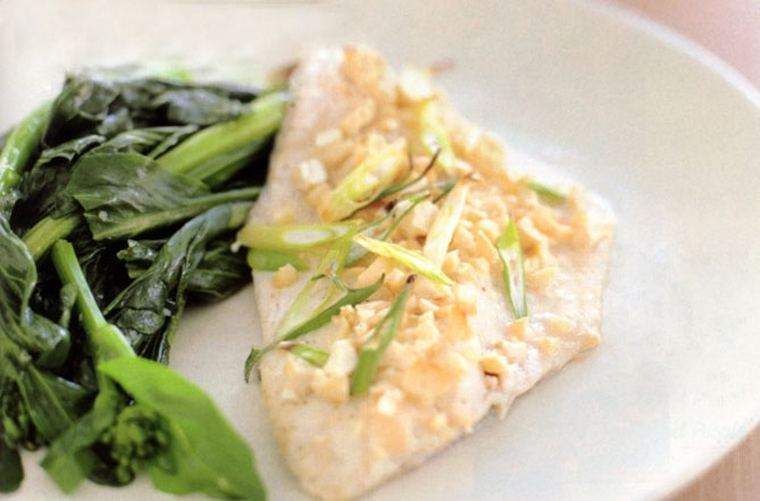
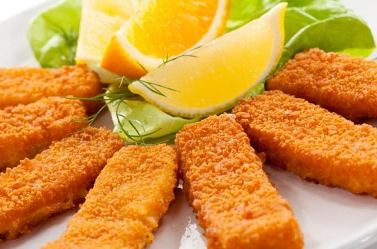

Straight from the pack to the pan.
Eight recipes built around the cuts — the Andhra and Bengali classics, the Kerala moilee, and the ones the children ask for. Each one names the cut it is built for.

Fish Pulusu
Fish in tamarind curry sauce
Suggested cut — Curry Cut
Fish Moilee
Fish in coconut milk
Suggested cut — Curry Cut
Bengali Fish Curry
Mustard, coconut and green chilli
Suggested cut — Curry Cut
Fish & Chips
Besan-battered, crisp and golden
Suggested cut — Premium Fresh Fillet
Fish Fillets & Cheese in the Oven
Baked with garlic, spring onion and cheese
Suggested cut — Premium Fresh Fillet
Fish Cutlets
Potato, green chilli and breadcrumb
Suggested cut — Frozen Fillet
Fish Fingers
The one the children ask for
Suggested cut — Frozen Fillet
South Indian Fish Fry
Marinated an hour, fried on the tava
Suggested cut — Premium Fresh Fillet